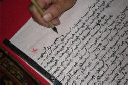

English spelling
 |
 |
 |
"a conspiracy to undermine a country that won't tow the western line" – BBC News website 17 December 2014
"Angry Hamilton accuses Vettel of breaking rules with break testing" – Daily Mail, 01 May 2018
 |
Earlier this month David Cameron, the prime minister, visited
Stonehenge ... and announced plans to duel the A303 The Daily Telegraph website 21 December 2014 |
We all make mistakes. There are three sorts above. Which is which?
- Slips and typographical errors
- Errors caused by the lack of sound-spelling consistency in English
- Errors caused by simply not knowing how a word is spelled
Right.
- The first two pictures (shcool and nohing) are just slips and they happen frequently. For the purposes of this guide, we can ignore them because they have nothing to do with spelling rules in English.
- The third picture (excellense) is the result of someone simply not knowing how the word excellence is spelled in English.
- The quotations from the BBC, Daily Mail and Daily Telegraph websites are errors caused by the lack of sound-spelling consistency in English. They are called homophone errors because toe and tow, break and brake and duel and dual sound the same but are differently written and mean different things. News sites are a rich source of such errors because many news stories are submitted by journalists over the telephone. Another example, from the Daily Telegraph, sadly since corrected, is the description of shelves which "grown with academic tomes".
 |
English spelling is wholly irregular and random. Right? |
Wrong.
It is often claimed that English spelling is impossible, or at least very difficult, to learn. For example:
English spelling is probably the most irregular spelling system of
all those based on the alphabetic system. Not only can't you tell
how to spell a word from hearing it spoken, you can't predict how a word
is spoken from the written word either.
The English Spelling Society
In fact, that is only very partially right because there are clear connections between how a word is pronounced
and its spelling despite the fact, which is not arguable, that there are
numerous exceptions.
It is also not a very well-informed opinion because many other languages
have a deep orthography (see below) in which the connections between
sound and spelling are difficult always to discern.
Among other languages with a deep orthography like English are,
incidentally, Korean (in which only one consonant is pronounced as it is
written), Hungarian, Mongolian, Thai and French.
Even Italian, which has a shallow, i.e., predictable, spelling system
has areas of full unpredictability.
To see how intuition and the application of simple rules allows you
to predict the sound of a word, try pronouncing these nonsense words.
Click here when you have tried the test.
| flubber | flooksendy | flimmax | greencumbler |
| drimble | bentle | heasering | chumblegrint |
You have (probably) never heard the words before but it is a safe bet
that you can make a guess concerning their pronunciation and, moreover,
most speakers of English will make the same guesses.
It will also work in reverse and most speakers of English can readily
write down these words spelling them in the same way as other speakers.
That is a sign of the fact that sound-spelling for the majority of
English words is entirely consistent and predictable. Speakers of
the language apply the same rules and arrive at the same spellings or
pronunciations.
If you can read phonemic transcription, by the way, here's the bet of
how you pronounced these words. If you can't read the phonemics, a
rough-and-ready guide is also in the list:
| flubber | flooksendy | flimmax | greancumbler |
| /ˈflʌ.bə/ | /ˈfluːk.ˌsendi/ | /ˈflɪm.mæks/ | /ˈɡriːn.ˌkʌm.blə/ |
| to rhyme with rubber | to rhyme with fluke bendy | to rhyme with slim packs | to rhyme with green tumbler |
| drimble | bentle | heasering | chumblegrint |
| /ˈdrɪm.bl̩/ | /ˈben.tl̩/ | /ˈhiː.zər.ɪŋ/ | /ˈtʃʌm.bl̩.ˌɡrɪnt/ |
| to rhyme with thimble | to rhyme with gentle | to rhyme with teaser ring | to rhyme with crumble flint |
If English really were a language with no predictable sound-spelling consistency as the English Spelling Society claims, that would not have been possible.
To understand what follows, you need to understand that we are
considering sounds not letters.
So, for example, the single letter 'p' is represented as a
single sound (transcribed, i.e., written as /p/) and even a double 'p'
as in pepper still only has a single sound /p/ in the middle
and at the beginning.
Pairs of letters like 'sh', 'ch', 'th', 'ck', 'sc' etc. are
also often only single sounds as they are in, for example:
shave (transcribed as /ʃeɪv/ with a single symbol
[/ʃ/] representing the first two letters)
school (transcribed as /skuːl/ with a single symbol
[/k/] representing 'ch')
this (transcribed as /ðɪs/ with a single symbol
[/ð/] representing the first two letters)
sock (transcribed as /sɒk/ with a single symbol
[/k/] representing the last two letters)
science (transcribed as /ˈsaɪəns/ with a single
symbol [/s/] representing the first two letters)
You do not need to be able to read the phonemic transcriptions to understand what follows (although it will help).
 |
The rules |
Here's a short list of the rules:
 |
Long and short vowels |
- short vowels only usually require a single letter: bit, bat,
sit, hat, kit, cut and so on. This is the
Consonant-Vowel-Consonant principle or CVC. It is adhered to
in thousands of words and knowing it allows us to predict from the
spelling how, for example, all of the following will be pronounced.
The CVC principle also allows us to infer the spelling from the
sound, even if we have never heard the word.
combat
habitat
brickbat
humdrum
driven
and innumerable more words. - long vowels are represented in two ways:
- by inserting a vowel, often 'e' or 'i', after the consonant: bite, bate, site, stating, hate, kite, cute, driving and so on. This is the Vowel-Consonant-Vowel (VCV) principle.
- by inserting a second vowel letter before the consonant: beat, boat, heat etc. This is the Consonant-Vowel-Vowel-Consonant (CVVC) principle.
Applying to these two principles, along with principle a., allows us
to predict how another huge range of words will be pronounced,
including, for example:
confuse
drive
dreaming
skating
defeated
considerable
displeasing
contracting
disambiguation
and thousands more. Again, this will work in reverse: we can make
a very good guess at the spellings of these words when we hear them by
applying the principles.
In summary, these three rules are:
- CVC: when a single vowel occurs between two consonants, it will be a short sound and that allows us to predict the sound and spelling of, e.g., cat, bat, mat, hatch, flat, fit and thousands more
- VCV: when a consonant occurs between two vowels the first vowel sound will be long and that allows us to predict the sound and spelling of, e.g., Kate, bate, mate, inflate, fate, dispute, and thousands more
- CVVC: when two vowels appear between two consonants, the vowel sound, however spelled, will be long and that allows us to predict the sound of, e.g., beat, seat, meet, fleet, boot, cruise, loose, relieve and thousands more
No English words other than a few colloquial abbreviations ends in 'v' so we always have a following 'e':
thieve, save, shave etc. This makes the vowel long,
because the VCV rule (above) acts.
For the rare abbreviations, the CVC rules applies so we pronounce
rev, spiv and guv with a short vowel.
There are exceptions (of course) and they are
common words, usually. They include:
come, done, give, gone, have, live, love, none, one, some
All these have short vowels but end VCV. They are quite simple to
learn and learners usually have little trouble pronouncing or spelling
them.
 |
Consonant doubling |
- consonant doubling often occurs in an effort to 'protect' the
short vowel sound.
If the consonant were not doubled in hatter, for example, the word would be pronounced as hater (because the VCV pattern would compel it) and the same goes for very many other words or word pairs such as diner-dinner, taper-tapper, cuter-cutter, fate, fatter, later-latter etc. This is the VCCV principle at work. - the consonant is doubled when adding an -ed or -ing ending only if the stress is on the second syllable: befit-befitting, remit-remitting, admit-admitted, commit-committed but offer-offering etc. This rule is often broken so we get, e.g., focussed and focused, targetting and targeting.
- regardless of stress, British English doubles the consonant if it is 'p' or 'l'. American English usually does not (see below).
 |
Spelling the /k/ sound (as in cake) |
The /k/ sound (as in, e.g., click, black, corn, bacon etc.) also obeys principles:
- single 'c' is the most common (and the way to bet) and can occur anywhere: actor, cactus, cart, because etc.
- doubling of the 'c' follows the same principle as any other consonant doubling: it protects the short vowel. So we have tobacco, Mecca etc. This is the VCCV principle, again.
- if the /k/ sound is followed by 'e', 'i' or 'y', 'k' is used instead of 'c': make, sketch, token, sake, slinky, skin etc.
- 'ck' similarly replaces 'cc' if it is followed by 'e', 'i' or 'y': panicky, tarmacked etc.
- 'ck' always follows a short vowel: luck, duck, back, fickle etc. This obeys the CVC principle because, as we saw, the 'ck' combination is actually a single consonant sound (/k/).
- 'k' may follow other vowels or consonants and the rules for vowel lengthening or shortening above apply: soak, shock, suck, make etc.
- /kw/ is always spelled 'qu': queen, quince, equine etc.
 |
Spelling the /dʒ/ sound (as in the 'j' in jaguar) |
- if the sound is followed by 'a', 'o' or 'u', the letter 'j' is preferred: injure, just, jangle, jumble etc.
- if the sound is followed by 'e', 'i' or 'y', the letter 'g' is preferred: aged, ginger, gauge, original, mangy etc.
- 'j' cannot be doubled (to protect a short vowel, again) so 'dg' is used instead: judged, budgerigar
 |
ie or ei? |
Schoolchildren learn to chant I before E except after C and for hundreds of words like believe, perceive, ceiling, thieving etc., the rule works just fine. Unfortunately, there are exceptions, as usual.
- Before gh, gn and ght: the spelling is ei
not ie:
weigh, neigh, foreign, feign, reign, height, freight - There are numerous exceptions which include:
beige, counterfeit, either, forfeit, heir, leisure, neither, rein, seize, their, veil, vein, weir, weird
 |
Endings |
- words ending in 'y'
- if you add an 's', the 'y' changes to 'ie': worry-worries, cry-cries, cherry-cherries etc. This rule works for both the third-person form of the present tense verb and the plurals of nouns.
- words ending in 'ey' usually do not change when an 's' or 'd' is added: valley-valleys, player-players-played etc. (But lay-laid, say-said etc.)
- 'y' does not change when it's followed by 'i': dry-drying, cry-crying, spy-spying etc.
- words ending in 'e'
- words ending in a consonant + 'e' drop the 'e' when adding anything beginning with a vowel: love-loving, response-responsible etc. (But, in this case, the long vowel is often protected by retaining the 'e': likeable, mileage etc.)
- the soft 'c' (/s/) and 'g' (/dʒ/) sounds also mean that the 'e' is retained: manage-manageable, outrage-outrageous, trace-traceable etc.
- Some adjectives ending in -able can have
alternative spellings, with and without the retention of the
'e'. For example:
likeable / likable
loveable / lovable
saleable / salable
sizeable / sizable
useable / usable
- words ending in 'ie' change to 'y': die-dying, lie-lying
- words ending in 'ue' drop the 'e': argue-argument, true-truly
- words ending in 's', 'z', 'x', 'ch' or 'sh' take 'es': watch-watches, match-matches, fizz-fizzes, fix-fixes, bush-bushes, bus-buses etc.
- when the suffixes -ous, -ious, -ary, -ize /-ise, -ation
and -ific are added to the end of a word ending in -our,
the 'u' is dropped so we get, e.g.:
odour-odorous
humour-humorous
labour-laborious
colour-coloration
honour-honorary-honorific
glamour-glamorise / glamorize
discolour-discoloration
When other suffixes (such as -ful, -ite, -less, -able) are used to change word class, this rule does not apply so we get, e.g.:
colour-colourful
favour-favourite
flavour-flavourless
honour-honourable
odour-odourless - Usually, when adding any suffix to a word ending in 'll' we do
not retain the doubled letter so we get, e.g.:
hill-hilly
install-instalment
will-wilful
(American spelling often retains the doubled 'l' on many of these (see below).)
However, this rule does not apply to the suffix -ness so we allow:
full-fullness
well-wellness
dull-dullness
(There is more on the pronunciation of verb endings in the guide to pronouncing inflexions.)
So there are rules. Rather too many of them, in fact, and the list above is nowhere near complete.
 |
Teaching the rules |
You can't of course, teach all the rules listed here at one go.
Many would say that learning English spelling rules is actually
impossible, and unnecessary because people will pick up the patterns by
exposure. That's certainly arguable and it is clear that the more
exposure people have to examples of the patterns, the more likely they
are to absorb them.
It is, however, worth taking each of the regular patterns, one at a
time, and focusing 20 minutes or so on them now and again (weekly,
perhaps).
Spelling rules lend themselves to light-hearted games, races and
competitions in the classroom because they have Right/Wrong answers.
 |
Homophones |
As we saw, not even the BBC is immune to the homophone trap.
Many native speakers trip up in this area.
If you'd like a list of a couple of hundred common ones,
click here.
It is helpful, then, to look through the language you are presenting
just to see if there are any homophone traps the authors or you have
fallen into.
It is, however, not usually worth focusing on them because that can confuse as
much as it enlightens.
There is, nevertheless, a set of homophones in English on which it is worth focusing. In the following, can you detect the problem to describe in the right-hand column? Click on the table when you have a few notes.

 |
Why is English spelling irregular? |
OK, so spelling in English is tough because a) there are lots of
confusing rules and b) even when you have mastered the rules, there's
always an exception. If you look back at the list above, you can
probably find an exception to every single rule.
English spelling is something of a mess because of its history:
- Early printers were often not native speakers of English, even in England, and the influence of Dutch (their first language, frequently) is seen in, e.g., the insertion of the 'h' in ghost. (Even Caxton, the first well known English printer, had spent 30 years outside the country and his grasp of English writing conventions was shaky.)
- English has a higher proportion than most languages of what are called loan words (i.e., words imported from other languages). This means that spelling in English sometimes follows the conventions of Scandinavian languages, French, Latin or Greek among others. Words may retain their spelling but the pronunciation is often Anglicized so the mismatch between spelling and pronunciation arises. The notoriously varied pronunciation of ough (cough, rough, thought, plough, through etc.) is a product of this sort of confusion.
- English does not have a regulating authority to rule on correct
spelling or introduce reforms. French and Spanish have
and many other languages, German, Portuguese, Norwegian etc. have
undergone repeated reforms to try to simplify and codify the
spelling of words (often in the teeth of considerable opposition).
There are hundreds of such academies around the world, all devoted
to formalising, correcting and sometimes reforming the way a
language is used and written. For example, we have:
The Académie française for French
The Nederlandse Taalunie for Dutch
The Rat für deutsche Rechtschreibung for German
The Institut d'Estudis Catalans for Catalan
The Accademia della Crusca for Italian
The Asociación de Academias de la Lengua Española for Spanish
and even
The Pontifical Academy for Latin
as well as at least 12 focused on Arabic of various forms.
English has never had such an academy (although some have tried to start one) so the language remains unreformed. The sole exception is South African English, by the way (The English Academy of Southern Africa). - English is spoken as a first or second language by around a billion people and it is an official language in around 60 countries. There are small but significant differences in spelling around the world. It is not only a difference between British and American spellings, either. Canadian English, for example, generally prefers color to colour but retains the British centre instead of the American center. Indian English usually prefers to follow British spelling conventions as does Australian English (at least nowadays) despite Australians normally using an American computer keyboard layout, by the way.
 |
Spelling reform |
We noted above that apart from South African English, no variety
of English has any kind of official body to oversee its usage and
form. That has not, however, stopped people from trying to
reform what they see as an inconsistent system which is hard to
learn and inefficient.
The arguments behind reform range from making education less time
consuming, reducing the amount of printing required (and the amount
of paper used), enhancing the use of English as an international
lingua franca and so on.
In an effort to make the spelling system easier to learn and enhance
the utility of English most reformists focused on making spelling
more representative of its pronunciation. For the flaw in that
principle, see below.
In the 16th and 17th centuries a number of attempts to reform the
spelling of English were made, none of which met with much success
primarily because they were cumbersome and based on a poor
understanding of phonology.
However, the modern spelling of some words was successfully
introduced in the 17th century in a minor way with, for example, the
spelling of war as warre and town as
toune falling out of fashion.
Unfortunately, a number of other reforms were introduced around the
same time to make the sound-spelling relationships in English even
more obscure so, for example, a silent b was
introduced into words such as debt, doubt and subtle
to match the presumed Latin origins of the words and a silent c
was introduced into words such as scissors.
Many of these disimprovements were the result of ignorance so, for
example, the Old English ake was reformed to ache
on the mistaken assumption that it was cognate with the Greek word
and the silent s was inserted into island on the
basis of a similar error concerning the Latin word.
Nothing much was achieved until the 19th century when the
scientific study of phonemics began to be established. Noah
Webster published his first dictionary in 1806 and many of the
spelling reforms he suggested then and in later works have become
standard in American (and other) varieties of English so we get,
e.g., the distinctions between centre / centre, programme /
program and so on (see below for more examples).
Other 19th century attempts to reform the spelling of English
foundered on the rock of general resistance or public indifference
so words such as call, spelling, well, drill and so on
retain the redundant doubled letter l and other words such
as are, give, make, given and so on retain the silent e.
Silent letters in words such as although, though, through
and so on have also resisted attempts to spell them as altho,
tho, thru etc. but some are in colloquial and informal use to
this day.
Other attempts to reform the spelling of, e.g., mixed
as mixt also met with no success.
In the early 20th century, efforts continued to reform the
spelling of English and, in the UK, the Simplified Spelling Society
(now the English Spelling Society) was founded in 1908 and had some
early success in attracting high-profile individuals such as George
Bernard Shaw into its ranks.
In the USA, the Simplified Spelling Board was founded in 1906 with a
similar agenda and also attracted important supporters such as
Andrew Carnegie, who provided very considerable funding. In
1919, Carnegie died without leaving the Board any inheritance and,
without funding, it expired the following year.
Neither organisation has had any appreciable effect on the spelling
of Modern English on either side of the Atlantic despite the support
of famous figures, among them Charles Darwin, Isaac Asimov, H. G.
Wells, Alfred Lord Tennyson, Charles Dickens, Mark Twain and
Benjamin Franklin. Even major publishers have been unable to
influence change so, although the Chicago Tribune adopted reformed
spelling in 1934, it was virtually alone in doing so and
discontinued the habit slowly over the next 40 years. Theodore
Roosevelt, President of the USA from 1901 to 1909, was also an
enthusiastic advocate of reform and was widely mocked for it, too.
Efforts over the years have varied from focusing on just a few common words whose spelling is seen in need of reform and that has often seen some small successes (hence the modern spelling of fantasy instead of phantasy, for example) to suggesting wide-ranging and radical reforms. In the latter case, the Simplified Spelling Board in the United States of America suggested, for example:
| aesthetic as esthetic | debt as det | doubt as dout | character as caracter | school as scool |
| add as ad | bill as bil | are as ar | give as giv | head as hed |
| called as cald | carried as carrid | advanced as advanst | money as mony | cough as cof |
| foe as fo | island as iland | scenery as senery | friend as frend | guess as ges |
None has been accepted.
Informally, in fact, some spelling reform has taken place in
English without the deliberate efforts of reformists. So, for
example, music and basic have lost the final
k, (musick, basick), many words once spelled with an
our, such as erruor, are now spelled with the
simplified -or ending as error, and those which
were once spelled with an -re ending, such as chambre,
are now spelled with the simpler -er ending as chamber.
American spelling has taken this a step further than British
spelling conventions allow.
At the extreme end of the reform spectrum come attempts to invent a wholly new alphabet in which English words could be phonemically spelled. George Bernard Shaw left money in his will for this endeavour but the Shavian Alphabet of nearly 50 characters, which bear no resemblance at all to the Latin alphabet in which English is usually written, and other such attempts proved fruitless despite assiduous efforts to make them more usable and transparent.
English spelling: the good news |
One advantage of having a rather odd spelling system is that meaning can often be inferred from spelling. For example, in English, these three words are pronounced the same (they are homophones):
rite, write, right
But, because of the different spellings, we can easily see which are connected to the following words and if we know the base word, we can have a good stab at inferring the meaning of the others:
written, ritual, rightness, rights, writing, rites, righteous
Reforming English spelling would mean that this handy reference
would disappear and all three words would probably be spelled rite.
Spelling and
meaning, in English, are connected and that means, too, the many other
homophones such as knightly and nightly are
distinguishable by the orthography rather than being spelled
identically.
Spelling reform, many argue, would result in a loss. English, they point out, is not
meant to have a phonetic spelling
system.
So, next time your students despair of being able to spell correctly,
it may be worth pointing this out.
Another thing to point out to despairing learners is that native
speakers also have trouble. We often see, for example, dessicate,
acommodation (or accomodation), embarass, wierd, definately and so on.
You, of course, can correct all those.
 |
Diacritics |
The term diacritic refers to the accent marks which exist in many languages and show a
difference in pronunciation (or used to).
Modern English retains the use of some accent marks on imported words,
almost always those from French, but it is often a matter of personal
taste. Using role instead of rôle is
common and hôtel is almost never seen, for example.
However, in other cases, words more recently or more obviously borrowed
from French retain the accents: cliché, café, vis-à-vis,
tête-à-tête etc.
When there is a possibility of ambiguity, the convention is to retain
the accent markers, so we have résumé and
resume.
Loan words from other languages usually get stripped of their
diacritics, although über from German is seen alongside
uber. The words doppelganger and doppelgänger
are in free variation and English usually removes the capital letter
obligatory in German on all nouns. The Turkish döner
kebap is almost always spelled as doner kebab in English.
The dieresis signalled by two dots over a vowel to denote a separate
pronunciation rather than a diphthong is becoming rarer and it does not
appear on most computer keyboards so, for example, naive and
naïve are both seen. The mark appears over the second of
two vowels unless it is intended to signify that the final vowel is not
silent (as, for example in Brontë). It is retained on many proper
names so we see, for example, Chloë, Eloïse, Zoë, Noël, Raphaël
etc.
Some publications, notably the New Yorker, retain the mark for
separately pronounced vowels in, e.g., reëntry and coöperate
but this is increasingly rare and inconsistent.
 |
English (BrE) and American (AmE) |
English (BrE) and American spelling (AmE) differ as everyone knows
but the differences are not huge. The number of words affected is
probably fewer than 400. (Given that the 20-volume Oxford English
Dictionary contains entries for 171,476 words in current use, and the
Oxford website estimates that there are at least 250,000 distinct words
in English, that
represents a tiny proportion, less than 0.25%.)
In most cases, the AmE variant is simpler and rooted in Noah Webster's
concern to eliminate inconsistencies. In this he was only
partially successful.
Here are the most commonly cited differences with the BrE version given
first followed by the AmE version:
- o or ou
the 'u' is omitted for the BrE colour, favour, parlour etc. to give color, flavor, parlor etc. In fact, the spelling without the 'u' was the normal one in Britain until Shakespeare's time. By the way, glamour is spelled the same in both varieties and both varieties use only -or for people and scientific nouns such as governor, tremor etc. - final e
final 'e' is dropped from words like axe and when adding a suffix which makes the 'e' silent as in ageing (BrE) and aging (AmE). Note, however, that both varieties usually keep the 'e' when losing it would affect the pronunciation of the preceding consonant so both BrE and AmE have changeable, traceable etc. BrE does in fact often drop the 'e' in words like lovable, movable, provable etc. - silent endings
likewise the final silent vowels on words like catalogue and dialogue are dropped to get the AmE catalog and dialog. (This does not happen with tongue which is spelled the same in both varieties.) - m or mme
words in BrE which end '-mme' usually end simple '-m' in AmE: programme, program is the only obvious example but some British English speakers use kilogramme and telegramme. That is becoming quite rare. - -re or -er
words ending '-re' in BrE are generally spelled with '-er' in AmE: centre, center, fibre, fiber, calibre, caliber etc. - -ce or -se
words which end with '-ce' in BrE will often end with '-se' in AmE: defence, defense, offence, offense etc. - verb-noun differences
when BrE distinguishes between the noun (e.g., practice, licence) and the verb (e.g., practise, license), AmE does not, preferring the '-ce' ending for all. - -ise or -ize
BrE prefers, on the whole, '-ise' in words like organise but both spellings are acceptable (the '-ize' spellings are those preferred by Oxford University Press, for example, and are preferred by many in synthetic verbs which are formed from adjectives or nouns such as decimalize, modernize etc.). AmE prefers '-ize' on such words although there are exceptions in words like advertise, comprise, exercise, franchise, comprise etc. due to the words' sources (they are not synthetic verbs formed from nouns or adjectives).
The same consideration affects the small number of words ending in '-yse' / '-yze' where BrE prefers analyse and paralyse, most AmE writers will use analyze and paralyze. Nevertheless, all users still prefer the nouns to be analysis and paralysis because of the way the first 's' is pronounced (/s/ not /z/).
Some words, such as capsize and prize are spelled with the 'z' in both varieties. In fact, again, the '-ize' ending is the older one and the '-ise' ending a relative newcomer.
The distinction between the endings has, in fact, nothing to do with the pronunciation, which is unchanged whichever ending is preferred. The distinction is grounded, instead, on the source of the words in question. Those where the -ize ending are allowable are derived from or share a heritage with French -ise, Italian -izare and so on and are often based on Greek words originally. This is the reason, for example, that exercise may not be spelled as *exercize. The word does not derive in the same way as, for example, organise / organize but comes, instead, from the Old French exercice.
If you are unsure, therefore, whether to use -ise or -ise, always choose -ise.
On this site, the usual choice is the '-ise' ending. - -ct- or -x-
there is a small and not especially interesting debate concerning the alternative spellings of, e.g., connection / connexion, inflexion / inflexion and so on. It was the case that BrE preferred the 'x' spelling but this is no longer standard in most texts. The differences were due to British users' insistence on complying with the words' Latin etymologies. On this site, inflexion is spelled with the 'x' alternative but the forms are in free variation in other cases. (There are two exceptions: complexion and crucifixion are spelled with 'x' in all varieties.) - l or ll, p
or pp
BrE doubles the final 'l' in, e.g., label - labelled, cancel - cancelled but AmE usually does not (labeled, canceled).
The consonant 'p' very rarely receives the same treatment, being doubled in BrE: kidnapped, kidnaped, worshipped, worshiped but the double 'p' is also a standard AmE spelling.
When the morpheme ending in -l occurs in the middle or at the end of words, the AmE spelling prefers a double l and BrE and single l in, e.g.: fulfil, fulfill, fulfilment, fulfillment, instalment, installment, skilful, skillful, wilful, willful etc.
Consonant doubling is optional and inconsistent in AmE but not so in BrE and both varieties retain rebuffed and rebelling.
The words parallelled and unparallelled in BrE are spelled as paralleled and unparalleled in AmE although the AmE spelling is often seen in BrE texts and used occasionally on this site. - ae, oe or e
BrE 'ae' and 'oe' spellings on foreign words are usually reduced to 'e' in AmE so we have encyclopaedia and encyclopedia, anaemia, anemia, foetus, fetus, manoeuvre, maneuver etc. The simpler spelling is becoming more common in BrE. David Crystal's indispensible Encyclopedia of Language is spelled that way by its British publishers, Cambridge University Press. - en- or in-
This causative morpheme is usually spelled in- in AmE and en- in BrE. In British English, inquiry means a formal investigation and enquiry means simply questioning. In AmE, only inquiry exists. Similarly, insure in British usage means protect against and ensure means make certain. In AmE usage, only insure is used. Other examples are enclose, inclose, endorse, indorse. - There are some other minor, random
differences (BrE / AmE):
aeroplane / airplane
aluminium / aluminum
cosy / cozy
storey / story (for a building)
cheque / check (with a change in meaning from money order to bill)
furore / furor
grey / gray
gaol / jail (the latter is now ubiquitous in BrE and the former considered old fashioned)
mould / mold
plough / plow
speciality / specialty
sulphur / sulfur (and derivatives: sulphide, sulfide etc.)
tyre / tire
jewellery / jewelry - Hyphenation is less frequently used in
AmE than in BrE so we get, e.g.
re-enter / reenter
pre-empt / preempt
and so on.
As a rule of thumb, Commonwealth countries tend to follow the BrE rules although Canadian use is more often influenced by AmE.
There's no test on all this but there are plenty of spelling tests to
be had online (with a good one at
https://global.oup.com/booksites/content/0199296251/testyourself/testyourspelling.
On this site, there are short tests of spelling: one for B1/B2-level learners,
here, and another for A1/A2-level learners
here.
There is also
a
short lesson for learners with tests and exercises covering the
essentials of this guide.
|  |
Writing systems |
This survey of English spelling would not be complete (as far as
teaching the system is concerned) without some consideration of other
people's writing systems.
All written systems probably developed from an early pictographic system
in which the item referred to was represented by a picture (or icon)
recognisably depicting the word. The assumption is also made that
all European writing systems derive ultimately from the system in use in
Mesopotamia from around 4000BCE. So, for example, the sign for
mouth could be interpreted as mouth, speak, say, word and
so on.
Later, when writing with wedge-shaped tools was adopted, the signs were
simplified to what is known as cuneiform but remained essentially
ideographic. Gradually, Sumerian took on some alphabetic
characteristics because the simplified cuneiform script was developed,
through what is known as the rebus principle, to make the sound of a
word stand for all instances of that sound in other words. For
example the symbol
 can be made to stand for eye, I and aye, and for the
same sound in words such as ice, idle, belie, decry and so on.
can be made to stand for eye, I and aye, and for the
same sound in words such as ice, idle, belie, decry and so on.
By the rebus principle, the famous
To be or not to be?
can be represented as:
Ideographic and pictographic symbols are still very widely used, of
course, or you would know which was the appropriate toilet to use in a
culture whose language you don't speak but no modern languages rely on a
pictographic script.
Modern scripts, by contrast, rely on graphemes and they
are defined in two ways:
- as the smallest units which represent a sound in a language
so, for example, in English:
th is the grapheme representing the /ð/ in this and the /θ/ in heath. - as the smallest recognisable units of the written system so,
in English:
t and h are separate graphemes.
You may encounter the word glyph which has a connected meaning. A glyph is a readable unit of a writing system and may not be a member of an alphabet in itself so, for example, the letter g in English can also be written as G and g. The alternative ways to write the letter are called alloglyphs.
There are three fundamental sorts of writing systems which rely on graphemes and glyphs:
- Alphabetic systems
English has ostensibly an alphabetic system in which individual letters represent individual sounds (phonemes) but, as we saw above, spelling in English is not a good guide often to pronunciation and vice versa. Some sounds in English are represented by digraphs and even trigraphs so, for example:
th is this represents the single sound /ð/
sh in hush represents /ʃ/
ugh in cough represents /f/
and so on.
English may be described as having deep orthography. This means that the system is poor in relation to shallow languages such as German or Serbo-Croat in which there is a good correspondence between spelling and pronunciation.
Languages having a deep orthography include French, Mongolian, Modern Greek and, of course, English. Languages with shallower orthography include Spanish, Italian and Czech (and even Italian has some notable irregularities).
Most European languages and many languages which have only recently acquired a written form use an alphabetic system of writing although scripts vary from Latin (in which this is written) through Greek and Cyrillic to many other systems. For obvious reasons, alphabetic systems are sometimes referred to as segmental systems because each word can be broken down into sound segments.
Although many languages add a range of accents and diacritics to letters to represent certain sounds there are only three alphabets in use in Europe: Cyrillic, Greek and Latin. - Syllabic systems
In these writing systems, each grapheme (i.e., independent symbol) represents a syllable rather than a single sound. Examples include Arabic, the Japanese Hiragana and Katakana scripts, Hebrew and Amharic among others. Languages which deploy scripts like these usually have a syllabary (i.e., the total number of available syllables) which is quite limited. English would be ill-suited to such as system as the number of possible syllables is well over 10,000 and each would require a separate grapheme to represent it. Japanese, by contrast, makes do with around 100 syllables so the language is suited to this form of written representation.
The Arabic script is used incidentally, for many other languages unrelated to Arabic (or only distantly so).
Both Hebrew and Arabic are described as abjad scripts because vowels are not separately represented. - Logographic systems
In these systems, each word is represented by a single symbol (or glyph). The most obvious and famous examples are the Chinese languages and these are the only common surviving languages to use a logographic system. For example, the symbol represents the concept of sun or day.
Egyptian hieroglyphics are another familiar form of logographic
writing (developed from a pictographic system). Chinese characters are extensively used in written
Japanese, Korean and Vietnamese.
represents the concept of sun or day.
Egyptian hieroglyphics are another familiar form of logographic
writing (developed from a pictographic system). Chinese characters are extensively used in written
Japanese, Korean and Vietnamese.
Despite the fact that to be literate in Chinese it is necessary to learn to recognise around 5000 symbols (which places something of a strain on the educational system), the great advantage of the system is that symbols represent meanings, not sounds, so, even though various Chinese languages are not mutually comprehensible in the spoken form, they are in the written form.
Each type of writing system is processed by readers in a different way and there is good reason to suppose that these processing strategies will, especially in the early stages of learning, be carried over to attempts to read in English. For example, Arabic speakers may be indifferent to vowels (as they are not represented in Arabic) and may confuse, e.g., glass with gallons. Even speakers of languages which use a Latin script such as Spanish may have problems processing words in English because Spanish has a relatively shallow orthography.
 |
Spelling sounds |
One area of clear irregularity in English concerns the spelling of
individual sounds rather than whole words. English is not unique
in this respect but it is, perhaps, an extreme example.
Many other languages, including Portuguese and Modern Greek have very
weak relationships between sound and spelling. Portuguese, for
example, has only 5 vowel symbols but these can be pronounced in 17
different ways and the language's 18 consonants have 30 pronunciations.
Modern Greek has no fewer than 6 ways to spell the long 'ee' (/iː/)
sound.
This makes writing unknown words down from dictation in English a very challenging and often disheartening business. It is much easier to write down accurately what you hear in some other languages, especially those that have undergone occasional reform of the writing system to get closer to a one-to-one relationship between the sound and the spelling, such as German or Spanish.
In the in-service section of this site, some detail is provided concerning how consonant and vowel sounds are conventionally spelled in English. For consonants, for example:
- the sound /b/ can be spelled 'bb' or 'b' as in bubble so there are only two possibilities and bb can only come in the middle of a word.
- the sound /k/, on the other hand, can be spelled c as in cab, k as in kid, kk as in trekker, ch as in chord, q as in liquor or cc as account so there are six possibilities.
Vowel sounds are more variable so, for example:
- the long ee sound, represented as /i:/ can be spelled ee as in meek, ea as in beat, ie as in field, ei as in conceive, i as in ski, ey as in key and even oe as in people so there are at least seven possibilities.
- the short vowel in a word like sock is almost always spelled o as in lock, hot, cot etc. but there are some exceptions such as a as in watch and au as in sausage.
Both the guide to consonants and the guide to vowels, linked below, consider how the sounds are conventionally written.
| Related guides | |
| punctuation | for the guide to a related area |
| pronunciation | for the initial plus index to pronunciation guides |
| pronunciation | for the in-service index to pronunciation guides |
| types of languages | for the guide that considers many other differences between languages |
| consonants | for a guide which considers how these are pronounced in English and how they are spelled |
| vowels | for a guide which considers how these are pronounced in English and how they are spelled |
| the roots of English | for a guide to how English has developed over 1500 years and why its spelling is so odd |
References:
BBC News:
http://www.bbc.com/news/world-europe-30492348 [accessed
17/12/2014]
Campbell, G, 1998, Concise Compendium of the World's Languages,
London: Routledge
Chalker, S, 1987, Current English Grammar, London: Macmillan
Daily Telegraph:
http://www.telegraph.co.uk/news/earth/environment/archaeology/11303127/Stonehenge-discovery-could-rewrite-British-pre-history.html
[accessed 21/12/2014]
Oxford dictionaries on line:
http://www.oxforddictionaries.com [accessed
17/12/2014]
Proctor, P (Ed.), 1995, Cambridge International Dictionary of
English, Cambridge: Press Syndicate of the University of Cambridge
The
English Spelling Society:
http://www.spellingsociety.org/
[accessed 17/12/2014]